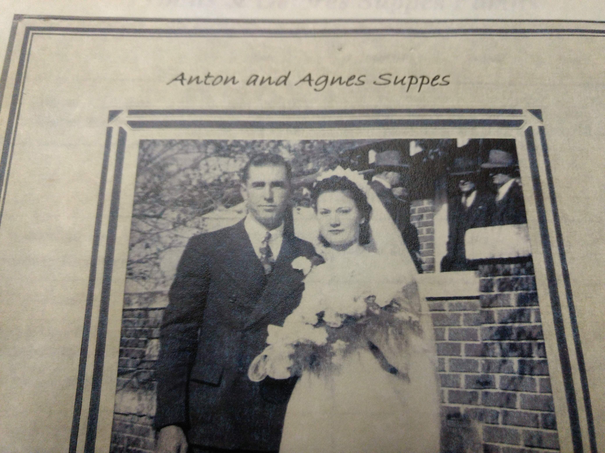
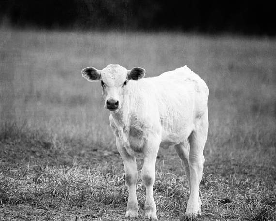

My great grandpa Tony (Anton Suppes) and his wife, Agnes Suppes, lived in a small town called Loretta in Kansas. Loretta, Kansas is an extremely small town where they owned a farm house.
My grandpa then got drafted into World War II. He became a tank driver, and helped his platoon of tanks to navigate and fight through the second world war. One time during the war, my grandpa and his platoon figured out that there was a platoon of German tanks coming their way. This had to have been a scary situation for my grandpa, but he had to act fast.
Both of my grandparents have parents that came from Russia. Though they came from Russia, they spoke German and kept German culture. This is because they were a group of Germans from Russia also known as Volga Germans which moved here because of the problems that they were having in both Russia and Europe. The town, Loretta, and many others around that area all had these Volga Germans that lived there.
Because of this, my grandpa knew fluent German and was able to yell through the trees and shrubs to the opposing platoon and persuaded them that they were Germans also and that they had a route change. He successfully made the Germans think that they were all on the same team and the Germans allowed them to pass through with no damage or harm.
Because my grandpa did not like to talk about his time in war, my family did not know about this occurrence until a small group of college students found reports of this happening. These college students then approached my grandpa to confirm that this happened, and said that it did. This was an awesome story to hear about my grandpa, and it makes me look differently at the past.

My great grandparents, Robert and Anna Dreiling, lived on a farm house near Victoria, Kansas. They had a farm with a large amount of acreage for growing crops (mainly wheat), raising cattle, pigs, and chickens. They ran this farm with the help of my grandma, and her brothers. This was a busy place in the world at the time.
One time, some of the cattle they had were pregnant, and there was a complication. As you know, Kansas is known for some bad weather, and on this day, the day the cattle was to give birth, a tornado started. The farm house had a tornado shelter on sight, so the children were safe from the dangerous winds of the tornado. My grandparents went out into the windy nightmare to help the cow give birth to the baby. The cow had successfully given birth to the baby with the help of my grandparents during a nightmarish storm. The tornado then ended and both the cow and the newborn calf had survived.
If it weren't for my grandparents, both of these animals probably would have died because of the large amount of stress in the situation. This lets you know how important it was to keep all of your animals alive because these animals are what people relied on to live their lives. These animals helped to pay for, feed, and sustain my ancestors, and my grandparents would risk their lives to keep these animals alive because of the amount of support that the animals gave their family. Many people around the world would do the same to keep their animals around to sell, or to eat.
For my grandparents, their only income was this farm, and they needed it for a good income and to stay a healthy family.